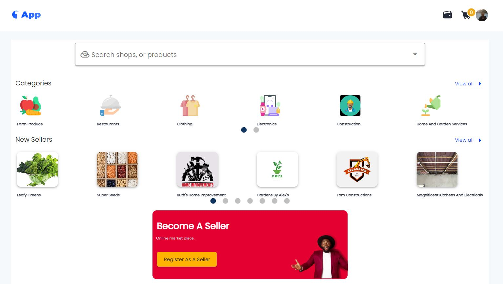
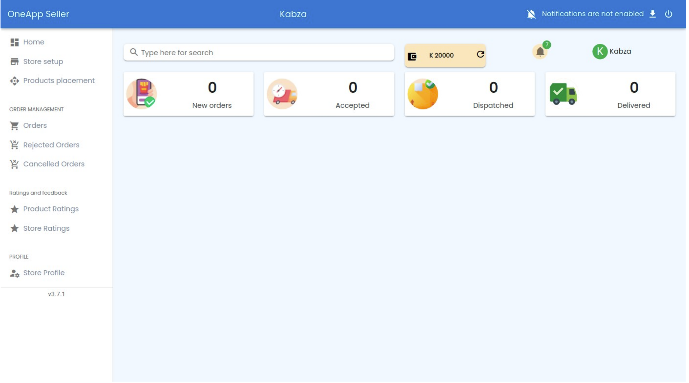
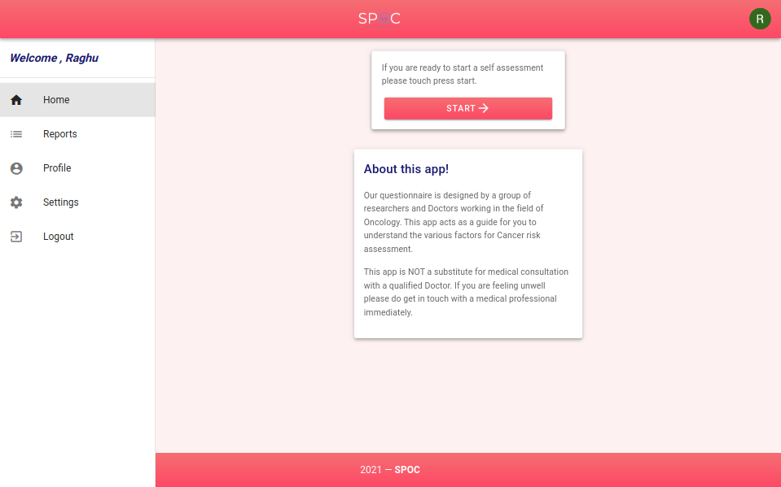

Ourmarket
This is an E-commerce online application that enables users and vendors to buy and sell products, and we are also providing services. Generally speaking its a combination of both products and services. We have developed user-friendly interface, where you can effortlessly navigate through an extensive catalog of products. There is a search bar to search products or also search vendors. All the products and services are categorized for hassle free navigation.
Ourmarket Vendor App
This is the vendor dashboard of the E-commerce online application that enables vendors to sell products, vendors can choose between the categories their products fit, and they can also provide services. The platform has a wide variety of options on the vendor dashboard to give discounts for the product and also to make the product trending and they can also show or hide the product. The vendors can accept, reject or partially reject the orders received. The matrix count of the orders are displayed on the main screen.
SPOC
SPOC is a app we developed for cancer detection and for self analysis. All the questions used in the application are taken from the cancer specialists. In this application we are collecting basic user data like height, weight to calculate BMI. The major concentration of the application is on Breast cancer, Lung cancer and Colon cancer. Based on the answers for the questions we are analyzing the risk associated in the cancer. Based on the risk analysis we are informing the patients regarding the further steps to be taken it maybe to consult a doctor.